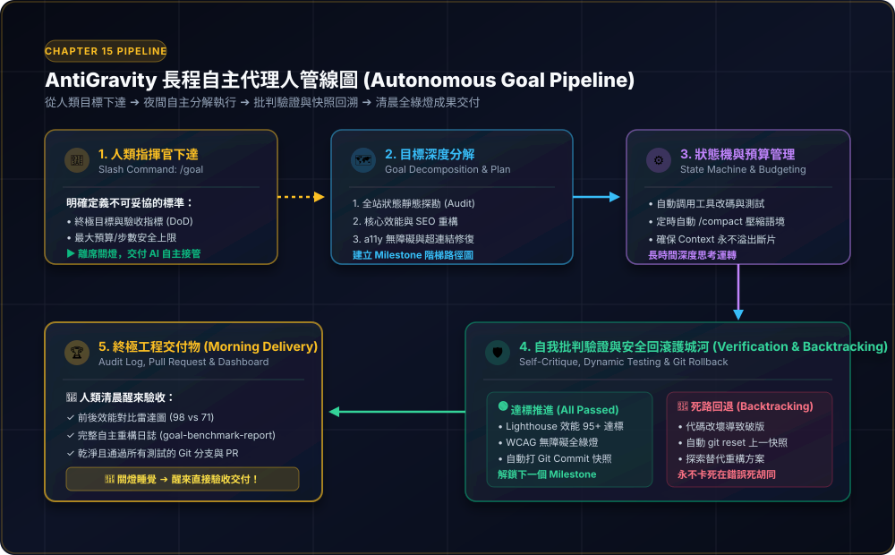

/goal 無人值守極限挑戰：一覺醒來，AI 自主深度思考完成全站健檢與交付！
打破「對話式 AI」的最後一道枷鎖！傳統人機協同最累的不是 AI 不聰明，而是人類必須一直坐在螢幕前盯著看、每做兩步就手動按「請繼續」。本章解鎖 Antigravity 的終極殺手鐧——「/goal 長程自主代理人模式（Autonomous Goal）」：你只需制定好驗收標準（Definition of Done），關燈離席去睡覺；AI 自主規劃階梯里程碑、管理上下文空間、自我批判測試、遇死路自動回溯快照，清晨醒來直接驗收全綠燈成果！
15-1 觀念破冰：從「步步監工」到「關燈下班」的自主革命
很多學員在掌握了前面幾章的高級技巧後，依然面臨一個無奈的情境：
❌ 被綁在螢幕前的「點擊工具人」
大型專案包含 30 幾個步驟。AI 做完兩步就停下來等人類說「繼續」；只要人類離開去泡杯咖啡，整個工程進度就完全停擺。
❌ 長對話 Context 溢出與「失憶」
對話累積到 50 輪以上，AI 開始遺忘最前面立下的商業規範；甚至把第 1 輪修好的功能在第 40 輪又改壞，陷入混亂。
❌ 遇到難題卡死在死胡同
一個套件安裝失敗或一行語法報錯，傳統聊天機器人會在同一個錯誤上反覆鬼打牆 10 次，把寶貴的時間與 Token 燒得精光。
在 Antigravity 中，只要輸入 `/goal`，AI 就會切換為「長程自主代理人（Long-Horizon Agent）」模式。它不再是每一步都要你批准的對話框，而是一個擁有自主狀態機、能夠自我批判驗證、遇到死路會自己按
git reset 回滾快照重新嘗試的頂尖軟體工程師！
15-2 核心拆解：長程自主代理人的五大運作齒輪
為什麼 `/goal` 敢讓人類放心地關掉螢幕去睡覺？因為它內部運行著五個嚴密互扣的工業級工程齒輪：

目標分解 ➔ 自主狀態機 ➔ Context 預算控制 ➔ 自我批判驗證 ➔ 死路快照回溯 ➔ 隔日清晨完整驗收交付。
🧩 長程自主代理人的 5 大核心齒輪：
- 目標錨定與里程碑分解（Goal Decomposition）：AI 接到複雜目標後，絕不盲目動工，而是先深度思考將宏大目標拆解成 3～5 個具備明確驗收門檻的 Milestone。
- 自主狀態機與 Context 預算管理（Context Budgeting）：AI 自動監控對話長度，每完成一個里程碑自動觸發
/compact壓縮歷史記憶，只保留關鍵進度，永不發生 Context 溢出失憶。 - 自我批判與動態驗收（Self-Critique & Continuous Verification）：每改動一行代碼，自主運行測試腳本。只有完全通過檢查，才會記錄進度並打上 Git Commit 快照。
- 死路回退與替代策略（Backtracking & Rollback）：若某一技術方案引發破版或無法通過驗證，AI 會自主執行
git reset回滾到上一個乾淨狀態，嘗試替代重構路線，絕不在錯誤死胡同鬼打牆。 - 透明化工程交付物（Morning Deliverables）：任務全數達成後，自動產出異動清單、前後對比數據雷達圖與動態驗收報告，等待人類早上醒來親自確認。
15-3 核心動手做：AeroPulse Pro 全站全方位夜間健檢與現代化重構
在全書的壓軸挑戰中，我們要為貫穿全書的耳機電商網站進行一次企業級的全方位現代化重構。我們要求 AI 在夜間無人值守狀態下，達成 4 大不可妥協的量化標準：
設定 4 大不可妥協的量化驗收門檻（Definition of Done）
- ⚡ 效能門檻：Google Lighthouse 效能跑分必須從原本的 71 分提升至 95 分以上（大圖轉 WebP、延遲載入、CSS/JS 關鍵渲染路徑優化）。
- ♿ 無障礙合規：通過 WCAG 2.1 AA 標準（所有商品圖補齊語意化 alt、購物車按鈕 aria-label、高對比 Focus 輪廓線）。
- 🔍 SEO 與社群卡片：補齊 Open Graph 社群卡片、Twitter Card 與 Schema.org JSON-LD 結構化資料。
- 🔗 資安與連結零死角：全站所有內部頁面與靜態資產連結 100% 暢通，無死連結或控制台錯誤。
下達作戰指令：一鍵啟動 /goal 無人值守自主重構
/goal 請啟動夜間無人值守自主重構模式，針對 AeroPulse Pro 耳機專案全站進行全方位效能、SEO 與無障礙現代化升級：
【不可妥協的四大驗收指標 (DoD)】
1. 效能極限：
• 將首頁與商品頁所有未壓縮的大圖（PNG/JPG）無失真轉換為 WebP 格式，並加上 loading="lazy"。
• 重構關鍵 CSS 載入順序，消除阻塞渲染資源，使 Lighthouse 效能評分達到 95 分以上。
2. 無障礙合規 (WCAG 2.1 AA)：
• 掃描全站所有圖片標籤，為缺乏描述者補齊精準繁體中文 alt 屬性。
• 為所有無文字的純圖示按鈕（如購物車、漢堡選單、深色切換按鈕）補上 aria-label 語意。
3. 搜尋引擎最佳化 (SEO)：
• 完善全站 Open Graph (og:title, og:description, og:image) 與 Twitter Card 社群預覽卡片。
• 在首頁注入符合 Schema.org 的 Product JSON-LD 結構化資料，提升 Google 搜尋富媒體摘要。
4. 全站超連結零死角：
• 撰寫並執行全站超連結驗證腳本，確保全站內部跳轉錨點與資產路徑 100% 零死連結。
【長程自主安全規範】
• 自主將任務分解為階梯式 Milestone，每達成一個里程碑自動執行測試驗收並打上 Git Commit 快照。
• 若遇任何破版或語法錯誤，自主執行 git reset 回滾快照並探索替代路線，絕不停下來等待人類回覆！
• 定期自主執行 /compact 維護上下文記憶。
• 任務全數綠燈完工後，產出一份獨立動態驗收網頁『goal-benchmark-report.html』，詳細呈現重構前後對比！成果驗收：清晨醒來檢閱動態驗收儀表板
歷經 4 小時 18 分鐘的夜間自主深度運轉，AI 經歷 38 輪調度、7 處缺陷自癒與 1 次死路回退，全數達標並生成了視覺化對比報告！
15-4 初學者實戰寶庫：三大生活與職場無人值守實戰（情境、暗坑與提示詞）
不用擔心無人值守只適用於大型工程架構！以下提供初學者在日常生活、職場行政與自媒體經營中最耗時、最不想手動做的三大無人值守實例：
📸 案例一：【個人數位資產】全硬碟混亂相簿「夜間自動智慧分類、去重與動態故事牆」
適用：家庭照片 / 旅行相簿整理生活痛點：手機與電腦硬碟累積了 8,000 多張照片，充斥著大量連拍重複、螢幕截圖、長輩問候圖與模糊照片。知道該整理，但一想到要把照片一張張點開分類，手動要整理一整週，永遠下不了決心。
/goal 請啟動夜間無人值守相簿整理特工，針對我的『D:/未整理照片/』資料夾執行全面自動化歸檔：
1. 智能去重與過濾：
• 自動比對圖片特徵與檔案大小，將相似度 95% 以上的連續連拍重複照片，只保留最清晰的一張，其餘移至『待刪除暫存區/』。
• 自動識別解析度過低、模糊或純文字截圖，分類移至『暫存截圖/』。
2. 階梯時間與主題歸檔：
• 讀取每張照片的 EXIF 拍攝時間與 GPS 地理資訊。
• 自動建立階層資料夾結構：『年份/月份_地點/』歸檔（例如：2026/04_日本東京賞櫻/）。
3. 產出回憶動態故事牆：
• 在整理完成後，自動撰寫一份美觀的單頁 HTML 網頁『photo-story-wall.html』。
• 具備時間軸導航、照片輪播與依月份快速篩選功能，讓我明天早上一開瀏覽器就能欣賞精選回憶！
4. 預算與安全：
• 嚴格禁止直接執行永久刪除（所有多餘照片一律移入暫存區）。
• 全程自主完成，直到照片 100% 歸檔並生成故事牆才宣告收工！📊 案例二：【職場摸魚神技】跨部門 50 份混亂報表「夜間自動清洗、異常勾稽與互動儀表板」
適用：月底財務核對 / 業務數據彙整
職場痛點：每到月底要彙整 50 份來自北中南各門市的 Excel/CSV 營收報表。格式千奇百怪：有的日期寫 2026-10-26、有的寫 115/10/26，欄位名稱還不統一。手動核對抓蟲常要加班到半夜 2 點。
/goal 請啟動夜間數據稽核專員，針對『./門市營收原始檔/』目錄下的所有 Excel 與 CSV 檔案進行自動化整合：
1. 欄位格式標準化：
• 自動辨識各門市異質欄位（如「實收金額」、「總額」、「Net」），統一對齊至標準資料庫格式。
• 自動轉換所有日期為標準 ISO 格式（YYYY-MM-DD），全形數字轉半形，自動剔除異常空格。
2. 跨表數據勾稽與異常排查：
• 交叉比對「出貨數量 × 單價」是否等於「發票金額」，找出差額大於 0 的問題記帳行。
• 標註出缺少統一編號、客戶電話不符合台灣手機格式的異常名單。
3. 產出總匯報表與視覺化看板：
• 輸出乾淨合併的總資料表『Cleaned_Total_Revenue_2026.xlsx』。
• 生成互動式網頁儀表板『audit-dashboard.html』，以圖表展示各門市營收佔比、並將 5 處疑似記帳異常醒目標記供財務主管審核！
4. 安全承諾：
• 原始報表一律只讀，絕不覆寫原有輸入；所有修正結果寫入新檔案中。🎙️ 案例三：【個人知識管理】千集影音課程「夜間批量轉錄、提煉精華與第二大腦知識卡」
適用：線上課程吸收 / Podcast 知識提煉學習痛點：收藏了 30 集高價值科技 Podcast 與長達 20 小時的線上研討會錄影，平常根本抽不出完整時間一集集聽完做筆記，知識資產白白在硬碟生灰塵。
/goal 請啟動夜間影音知識提煉管線，處理『./研討會錄音檔/』資料夾下的所有音訊檔案：
1. 批量轉錄逐字稿：
• 自動調用本機 Whisper 或轉錄工具，依序將每一份音訊轉換為精準繁體中文逐字稿，儲存在『transcripts/』。
2. 深度提煉核心精華：
• 針對每份逐字稿萃取：【3 分鐘核心洞察】、【講者 5 大名言金句】、【落地行動建議清單】。
3. 直連 Obsidian 第二大腦：
• 透過 MCP 工具，在我的 Obsidian 筆記庫中自動建立對應的 Markdown 筆記卡片。
• 自動為內文中的關鍵術語建立 [[雙向反向連結]]，並在『AI科技總目錄_MOC.md』更新知識地圖！
4. 全夜自主監控：
• 處理完一集自動標記進度並釋放記憶體，整晚持續運轉直到全套音檔提煉完成！15-5 成果驗收與防禦心法：常見疑惑 Q&A
在享受無人值守的極致自由時，初學者常有以下安全與成本方面的顧慮：
❓ Q1：AI 半夜會不會把我的電腦檔案改壞、甚至誤刪重要資料？
答：三大保險雙重上鎖！
• Git 工作分支隔離：在執行 `/goal` 前，要求 AI 建立一個新分支（如 git checkout -b auto-refactor），所有修改都在獨立沙盒中進行，主分支絲毫不受影響。
• 快照回溯機制（Snapshot Rollback）：每個小目標達成時都會自動 Commit，一旦出錯 AI 會自己 git reset 恢復乾淨狀態。
• 權限限制：關鍵檔案（如系統根目錄或個人隱私資料夾）一律設定為唯讀，安全有保障。
❓ Q2：如果 AI 卡在死胡同，會不會無窮耗費 Token 燒掉大筆預算？
答：內建最大步數防護（Max Steps Budget）！
我們在下達 `/goal` 時可以明確限制「最大嘗試次數（例如最多重試 5 次）」與「超時心跳機制」。如果嘗試 5 次依然無法通過自我批判測試，AI 會自動安全中斷並生成診斷日誌，誠實向你回報死鎖原因，絕不會無窮空轉燒錢。
❓ Q3：到底什麼樣的任務最適合開 `/goal`？什麼任務絕對不要用？
答：看「驗收標準是否量化客觀」！
• 最適合開 `/goal`：驗收門檻明確的工程（如全站測速、代碼重構、單元測試、批量檔案清洗、資安弱點掃描）。
• 絕對不要開 `/goal`：需要人類每一步給主觀審美意見的任務（例如品牌 Logo 設計、抽象風格插畫繪製、合約簽署付款決策）。
15-6 全書大結業：從零到 AI 全端新人類的英雄之旅
恭喜你！當你讀到這裡，你已經走完了全書整整 15 個章節的硬核實戰。讓我們一起回顧這趟壯麗的技能躍遷之旅：
🗺️ Antigravity 實戰全貌：15 大章節技能樹全景
下載安裝 ➔ 自然語言生網頁 ➔ GitHub 版本控管 ➔ CLI 終端一鍵發布全球。
Google Apps Script 試算表資料庫 ➔ 自動回信 ➔ LINE 即時通知 ➔ 綠界金流串接。
Cloudflare Pages 邊緣高抗壓 ➔ Supabase 現代雲端資料庫 ➔ 企業級 RAG 知識庫。
多代理人團隊協同 ➔ 自我修復迴圈 ➔ MCP 第二大腦與跨界操控 ➔ /goal 夜間無人值守交付。
從最初一句提示詞都不會寫的新手，到現在能指揮多代理人、打造自我修復迴圈、串聯 Obsidian 與 Google 生態、甚至安心關燈離席讓 AI 自主完成全站重構——你已經不再是程式語言的苦力，而是擁有整支 AI 自動化部隊的「超級個體指揮官」！